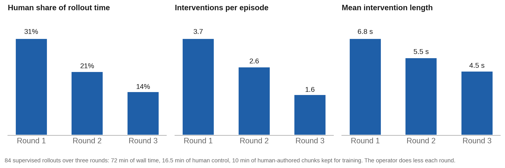
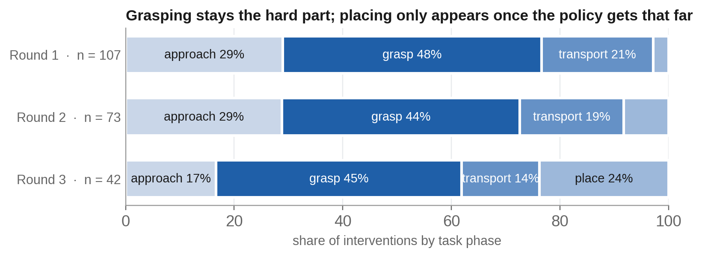

From demonstrations to a policy that sorts.
An action-chunking transformer trained on my own teleoperated demonstrations fit the data and failed closed-loop. Three rounds of human-gated corrections through the same VR interface took it from half the parcels to nearly three quarters.
Before, during, after.
Why plain behaviour cloning stalled
Offline the policy looked fine: validation loss fell, open-loop replay followed the operator's commands closely. Closed-loop the arms moved toward the objects and stopped a few centimetres short. The final approach is the rarest and most precise part of every demonstration, and it is where the robot's own small errors produce states the dataset never contained. More demonstrations help slowly, because they cover the expert's states again rather than the policy's.
Human-gated corrections
The policy runs; the operator watches through the same stereo VR interface used for demonstration and takes over only when it drifts toward failure. Control is a three-state machine owned by the robot side, so the operator and the policy can never command an arm at the same time.
The command origin is re-anchored at takeover so the handover has no jump, the policy's pending chunk is flushed, and every intervention is logged with its phase. Human-authored chunks are aggregated with the demonstrations and the policy is retrained from scratch each round.
Each round the policy does more and the operator does less.



What the policy was trained on.
- Parcel sorting
- 120 teleoperated episodes, bimanual, red and blue parcels into matching totes, randomised placement, lighting and scale. Successes and failures both kept and labelled.
- Board assembly
- 80 episodes on a modified FMB board (Luo et al., 2024) with 1 mm clearance, in simulation.
- Streams
- Both wrist cameras, head view, end-effector pose and command, contact force, gripper state, gaze, and a per-frame attention estimate. HDF5 with synchronised video.
- Policy
- ACT (Zhao et al., RSS 2023): three camera views in, chunked joint commands for both arms, grippers and head out, temporal ensembling at execution. Same recipe at every checkpoint.
- Intent model
- GRU over gaze belief and state, 0.832 macro F1 on held-out episodes, p99 inference 1.5 ms inside the 30 Hz loop. Chosen over a transformer that scored the same and cost ten times more per frame.
What is not done.
Simulation only
The policy runs in MuJoCo against the same controller as the hardware. Closed-loop success on the physical arms has not been measured.
Per-arm takeover
Taking over one arm under a joint-action policy produced no usable chunks. The fix was whole-robot handover; per-arm loss masking is the alternative.
The paired comparison
Whether nudged demonstrations train a better policy than unassisted ones is the question this pipeline exists for. The study is in design.